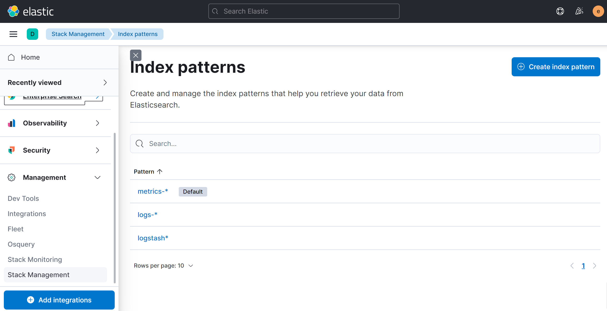
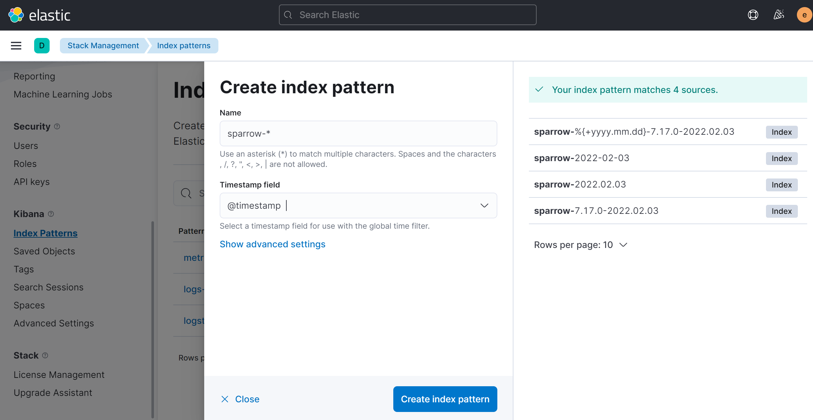

在分布式架构中, 日志分散, 一旦遇到问题, 需要翻看每一个日志, 去定位问题, 效率低, 操作复杂. 这时可以通过Elastic Stack全家桶中的支持, 来解决这个痛点, 具体如下:
这一套组合简称为ELK
这里介绍在Liunx Ubuntu环境下, 安装ElasticSearch.
nohup ./elasticsearch &(这样会后台执行);./elasticsearch-plugin list;http://localhost:9200/, 成功.但是, 这时的elasticsearch是没有密码的, 下面配置密码:
config/elasticsearch.yml文件, 并重启.xpack.security.enabled: true
xpack.license.self_generated.type: basic
xpack.security.transport.ssl.enabled: true
bin/elasticsearch-setup-passwords interactive, 这里需要为多个不同的账号设置密码:Enter password for [elastic]:
Reenter password for [elastic]:
Enter password for [apm_system]:
Reenter password for [apm_system]:
Enter password for [kibana_system]:
Reenter password for [kibana_system]:
Enter password for [logstash_system]:
Reenter password for [logstash_system]:
Enter password for [beats_system]:
Reenter password for [beats_system]:
Enter password for [remote_monitoring_user]:
Reenter password for [remote_monitoring_user]:
http://localhost:9200/, 发现需要输入密码.(这时输入elastic的账号密码即可)LogStash是具备实时输出传输能力的管道, 负责将信息从管道的输入端传输到管道的输出端, 同时这根管道还可以在中间加上滤网. 相对应的概念就是:
安装步骤:
config/pipelines.yml- pipeline.id: froglog
pipeline.workers: 1
pipeline.batch.size: 1
path.config: "/data/frog/logstash/config/*.cfg"
queue.type: persisted
config/frog.cfginput{
beats{
port => "5044"
}
}
output{
elasticsearch {
hosts => ["localhost:9200"]
user => "elastic"
password => "123456"
index => "%{[@metadata][beat]}-%{+YYYY.MM.dd}"
}
}
nohup ./logstash &完成.logstash也可以直接指定input为一个文件, 例如:
input{
file{
path => "xxxx"
}
}
接下来安装filebeats用来采集日志, 并发送给logstash. 这里在windows下安装一个filebeats演示一下.
filebeat.ymlfilebeat.inputs:
- type: filestream
enabled: true
paths:
- D:\Development\sparrow\logs\*.log
output.logstash:
hosts: ["localhost:5044"]
index: 'sparrow'
D:\Development\sparrow\logs\*.log的内容了.实际上, filebeat可以直接将数据发送给es, 不需要经过logstash.
config/kibana.yml配置.server.name: "kibana"
elasticsearch.hosts: ["http://localhost:9200"]
elasticsearch.username: "kibana_system"
elasticsearch.password: "123456"
nohup ./kibana &http://localhost5601/, 成功!访问成功的页面输入账号密码: elastic/123456和上面配置中的是不一样的.
接下来, 进行配置, 使得可以在Kibana上面看到日志. 这里使用的ELK全套版本都是7.17.0版本.
Management-Stack Management:

Analytics - Discover中, 选择指定的index, 就可以看到相关日志了:有时候, 输入的日志会有多行, 上面的配置, 会导致kibana中展示的信息也将本属于一条日志的信息分多行显示了. 如图:

这时需要调整filebeats的配置, 来优化日志收集:
filebeat.inputs:
- type: log
enabled: true
paths:
- D:\Development\sparrow\logs\*.log
multiline:
type: pattern
pattern: ^\[
negate: true
match: after
注意, type必须改为log, 否则没有效果.
解释一下几个配置:
修改配置之后的显示效果如下:
实际使用过程中, 日志输出格式不一样, pattern配置也就不一样, 需保证pattern和实际日志相互匹配.
kibana界面上展示的@timestamp字段和日志里输出的timestamp不是一个, 有时候, 由于日志量过大, 写入es速度过慢, 导致两者会差很多.